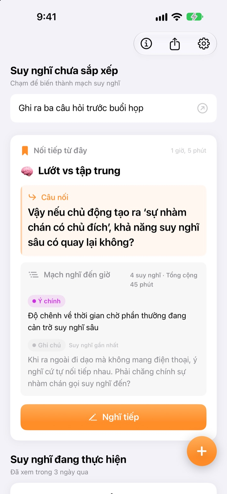
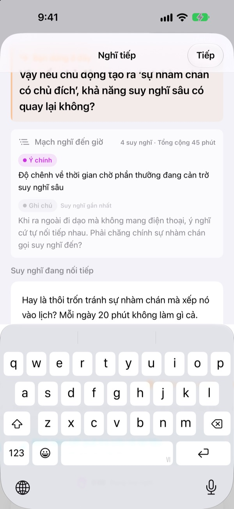
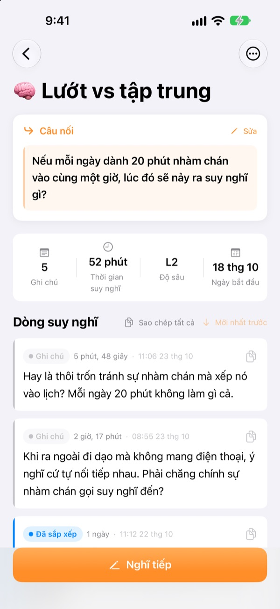
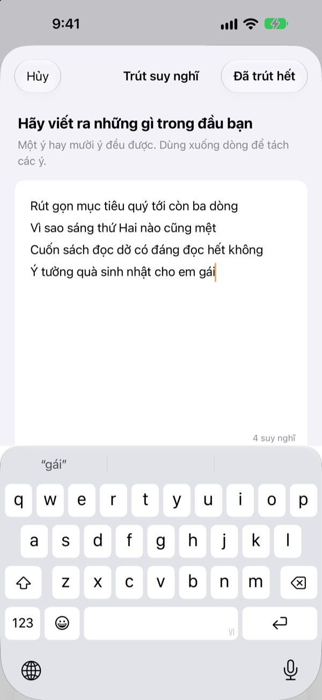

Suy nghĩ dang dở hôm qua,
hôm nay nối tiếp đúng chỗ cũ
Khi dừng suy nghĩ, hãy để lại một dòng để nghĩ tiếp. Lần sau mở ứng dụng, dòng đó đang chờ ở trên cùng.
Mọi tính năng đều miễn phí. Không cần tài khoản, mọi thứ ở trên thiết bị của bạn.

Thử để lại câu nối
Viết một suy nghĩ rồi để lại câu bạn sẽ nghĩ tiếp lần sau. Các bước giống hệt trong ứng dụng.
Mình đang nghĩ tới đâu rồi nhỉ?
Mở lại ghi chú từ mấy hôm trước, bạn chỉ thấy vài dòng kết luận, còn câu hỏi định nghĩ tiếp thì đã biến mất. Thế là lại phải nghĩ từ đầu. ThinkFlow nhắc bạn để lại câu hỏi tiếp theo khi dừng, để vừa mở ra là bắt đầu ngay từ câu hỏi đó.
Câu nối chờ bạn ở trên cùng
Khi kết thúc, hãy để lại một dòng: câu hỏi sẽ nghĩ tiếp. Lúc quay lại, câu đó, các ý chính cho đến giờ và suy nghĩ gần nhất nằm chung một thẻ, không cần nhớ lại mình đã nghĩ tới đâu.
Câu nối còn hiện trên tiện ích ở Màn hình chính, và trong lúc suy nghĩ, thời gian chạy trên màn hình khóa và Dynamic Island.

Từ ghi chú đến ý chính
Nâng từng suy nghĩ qua bốn mức: ghi chú, đã sắp xếp, ý chính và tóm tắt. Nhìn là biết suy nghĩ đã chín đến đâu.
Những gì bạn đã tìm hay hỏi được đính kèm thành tài liệu, tách riêng khỏi suy nghĩ của bạn.

Trước tiên, trút hết ra
Viết ra mọi thứ trong đầu, mỗi ý một dòng, rồi chọn ý muốn đào sâu ngay bây giờ: ý đó thành một mạch suy nghĩ. Phần còn lại chờ ở màn hình chính cho tới khi bạn chạm vào.
Những suy nghĩ bỏ quên hơn ba ngày được gom vào mục Suy nghĩ cần đánh thức.

Bắt đầu với ba bước
- 1
Trút suy nghĩ
Mỗi ý một dòng, rồi chọn ý đáng phát triển.
- 2
Nghĩ tiếp
Thêm từng ý mới riêng rẽ để sau này dễ chắt lọc.
- 3
Để lại câu nối rồi đóng
Lần sau bạn bắt đầu từ chính câu đó.
Mức độ chắt lọc
- Ghi chú
- Suy nghĩ thô
- Đã sắp xếp
- Đã sắp xếp một lần
- Ý chính
- Chỉ giữ ý chính
- Tóm tắt
- Tóm tắt cuối
Chạm vào nhãn mức bên cạnh một suy nghĩ để đổi. Ý chính và tóm tắt được hiện trước trên thẻ khi bạn quay lại.
Câu nối chờ bạn ở trên cùng
Có bắt buộc viết câu nối không?
Nếu bạn đã thêm gì đó thì có: màn hình Nghĩ tiếp chỉ đóng khi bạn để lại dòng tiếp theo. Nếu chưa viết gì thì cứ đóng. Bí quyết là dừng khi vẫn còn điều muốn viết, chứ không phải khi bị bí.
Suy nghĩ cần đánh thức là gì?
Những mạch suy nghĩ bạn không mở hơn ba ngày được gom riêng ở màn hình chính, để một ý gần như đã quên có thể tiếp tục từ câu nối của nó.
Muốn báo lỗi hoặc góp ý thì làm sao?
Dùng mục Gửi góp ý trong cài đặt của ứng dụng, viết thư tới địa chỉ bên dưới hoặc mở issue tại github.com/M1zz/ThinkFlow/issues. Mọi ý kiến đều được hoan nghênh.
Có thật là miễn phí hết không?
Có. Mọi tính năng đều miễn phí, không quảng cáo, không cần tài khoản. Mục “Ủng hộ nhà phát triển” trong cài đặt là hoàn toàn tùy ý và không mở khóa thêm gì.
Có câu hỏi hay góp ý? Hãy viết cho leeo@kakao.com.